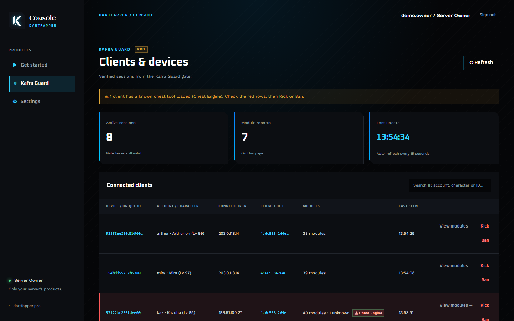
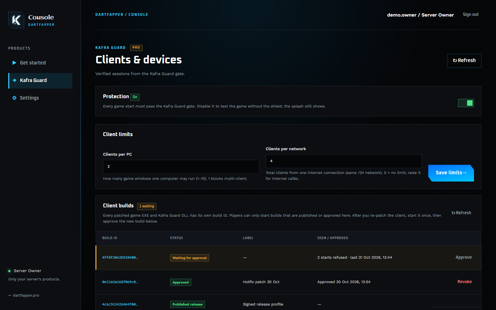

Kafra Guard
Free
For a new server finding its first players.
- 1 login server
- Up to 50 players online
- Up to 10 allowed DLLs
- Approved client builds
- Kick, device bans, module rules
- 30-day license, renewed free in the dashboard
Gameguard for Ragnarok Online servers
Kafra Guard checks every game client before it may log in. Patched EXEs, emulators, bots that skip the client and unknown builds are turned away by your own server, not by a hope that the client tells the truth.
Works with rAthena. Free plan, no credit card.
How it works
GameShield.dll starts with the game, shows your splash and reports the exact EXE and DLL build plus the modules loaded in the game.
The Kafra Guard gate on your VPS accepts only builds you published or approved, and gives the player a short-lived session.
A small rAthena module asks the gate before every login. No valid session from the gate, no login, whatever the client claims.
Features
Every patched EXE and DLL gets its own build ID. Re-patched the client? Start it once and approve it in the dashboard.
Allow or block a DLL by its SHA-256. Renaming a cheat DLL does not help; changing it gives a new hash you have never allowed.
See who is online by device ID, account and IP. Kick a session or ban the device so a new account does not get them back in.
Sign in with Google or Discord. Live sessions, bans, builds and rules for your server, from any browser.
Open any player and see every DLL in their game process, signed or not, and allow or block it in one click.
Set how many game windows one PC may run, and how many clients one network may bring. Raise it for internet cafés.
Renewal, Classic and Revo behind one gate and one license. Each client build can be tied to its own sub-server.
Your server's art on the start screen with a progress bar, signed so nobody can swap it for theirs.
Turn checks off for a test weekend or a client rework, and back on with one switch. No re-patching.
The dashboard
No config files to edit and no client to re-patch for a settings change. Everything below is a click away.


Screenshots use a demo server; names and IPs are made up.
Why Kafra Guard
Pricing
Free
For a new server finding its first players.
$99 one-time
Pay once per server. No monthly fee, updates included.
One license per server owner's gate. Setup help on Discord is included with Pro.
Questions
No gameguard does. Kafra Guard makes your server refuse clients that are not your own approved build, shows you what is loaded in each player's game, and lets you ban by device. That removes most bots and patched clients; the rest you can see and act on.
An rAthena server on a VPS and your patched client. The installer sets up the gate on the VPS; you add the login module to rAthena and the DLL to your client.
One payment for one server, with no renewal fee. You keep Pro features and new GameShield.dll versions for as long as Kafra Guard is offered.
Start on the free plan; everything there works the same way in Pro. Ask on Discord if you need a Pro feature to test before buying.
They see your splash with a progress bar for a moment while the checks run, then the game starts as usual.
Set up the free plan in an afternoon. Move to Pro when your server needs it.